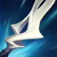

起手裝備
 長劍
長劍直接提高 1 技、3 技與普攻輸出。

Hecarim · 高速衝陣／恐懼分割型物理戰士
不要從正面直線開到底。先靠走位或鬼步把 3 技跑速疊起來，從側邊或斜角大絕切後排，再用 3 技把核心撞回隊友；2 技一定要在多人交火時開，才能吃滿回復。 7.2e：價格 3000→2900；近戰護盾 140 +35%額外物攻→150 +40%額外物攻，遠程不套用此增強。
本站當時評級理由：赫克林在 ARAM 的狹窄單線很容易用大絕恐懼切開陣形，鬼步與 3 技又能把額外跑速轉成攻擊力；2 技範圍回復讓他進場後不容易立刻蒸發。7.2b 雖把 1 技命中後額外跑速由 30% 降到 18%，但完整蓄力與大絕開戰仍有很高團戰價值。
近期官方未列赫克林標準 ARAM 專屬百分比修正，本站維持 100%／100%。7.2b 將 1 技完整蓄力命中後額外跑速 30%→18%，會連帶降低被動跑速轉攻擊與短時間追擊爆發。
直接提高 1 技、3 技與普攻輸出。

技能與普攻交錯頻繁，咒刃、生命與技能加速都符合長團需求。

ARAM 技能使用密度高，補足魔力並把高頻技能轉成額外傷害。

提供穿甲與黏人能力，對高護甲前排仍能維持威脅。

延後物理爆發並在擊殺後回復，適合衝進多人後繼續拉扯。

後期強開失誤仍有復活容錯。

技能加速讓 1、2、3 技循環更快。

三級鞋補近戰進場需要的持續承傷。

1 技與普攻可快速疊層，長團輸出與回復都穩定。

持續貼身作戰能把收益吃滿。

低血量衝陣時提高反打能力。

改善普攻銜接與三相節奏。

額外跑速同時提升機動與被動轉換攻擊。

保留最可靠的進退與關鍵技能銜接；雪球戰車進場後仍可用閃現修正位置。

雪球命中後可等待隊友跟上再進場，讓近戰英雄在單線拉扯中擁有穩定的接戰與追擊角度。
1 技 > 3 技 > 2 技
ARAM 開局三個基礎技能各點 1 級，之後主升 1 技、次升 3 技；大絕能點就點。
先用完整蓄力 1 技打前排或兵線，不要沒跑速就硬開。鬼步與 3 技都在時才有真正威脅。
三相與魔劍成形後，從側角用大絕切斷後排，再用 3 技把一名核心撞向我方；2 技要覆蓋最多敵人。
你是開戰者但不是純坦。敵方關鍵控制還在時先繞角度，守護天使能讓你更敢做第一波分割，但復活後要立刻找退路。
 星蝕
星蝕可替換魔劍正宗，靠百分比傷害與護盾提高對坦效率。
 黑色切割者
黑色切割者可替換席利妲，快速疊減甲幫整隊物理輸出。
 自然之力
自然之力替換守護天使或死亡之舞，增加魔抗與追擊移速。
獨立歷史資料：7.2b 分類評級。7.3a 僅有部分增幅公告欄位校正，英雄分類適配與出裝未因此全面重評；不套用到標準 ARAM。
看遊戲卡片下方分類 → 點相同分類 → 看左側 S+／S／A。
赫克林本身就會把跑速轉成戰鬥價值，任何高額跑速增幅都能同時提高追擊與輸出。
大絕具有長距離位移，三技能也強調高速衝鋒，位移增幅很契合進場節奏。
一技能高頻施放、二技能持續作戰與大絕開戰都需要技能循環。
大絕衝刺後的穿透、防禦與追加傷害能提高第一次切入的成功率。
加速聚變、技能普攻循環與保命卡都能直接放大疾跑進場後的戰鬥價值。
三技能會強化下一次普攻，技能後普攻型增幅具有明顯單卡價值。
v80.12.0 ARAM A 第三批：赫克林同步 7.2b 1 技額外跑速 30%→18%；標準 ARAM 未套用未標註的其他模式數值。｜v93 7.2d 標準 ARAM 全量校正：已複核 Tier、標準 ARAM 模式修正、7.2c／7.2d 英雄與道具、現行符文名稱及雪球戰車；無額外異動者沿用已驗證配置。｜v94 7.2e：7.2e：價格 3000→2900；近戰護盾 140 +35%額外物攻→150 +40%額外物攻，遠程不套用此增強。